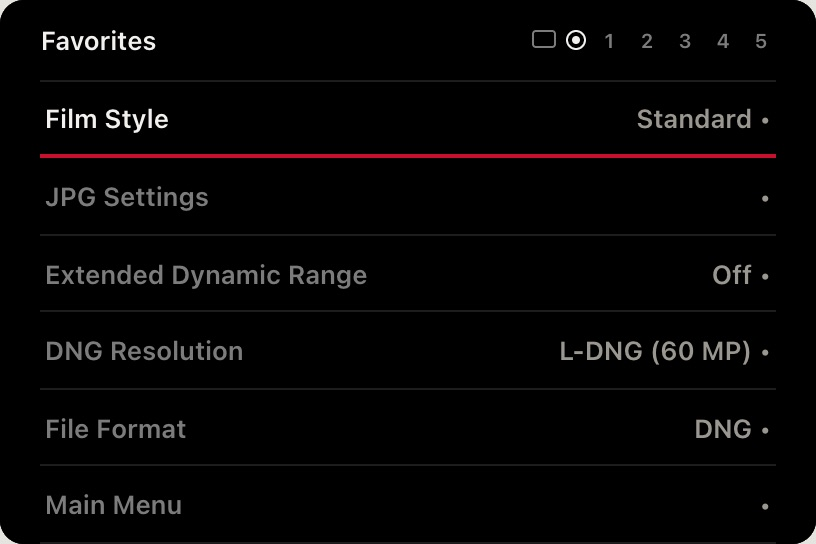
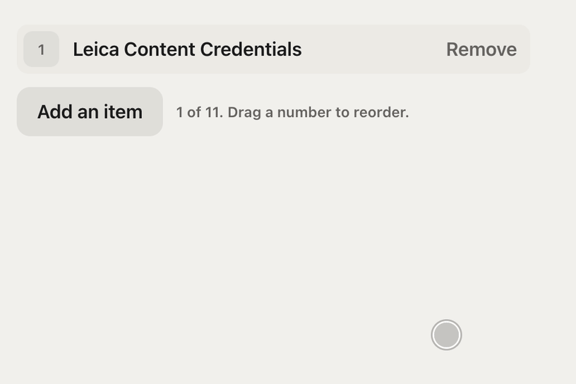
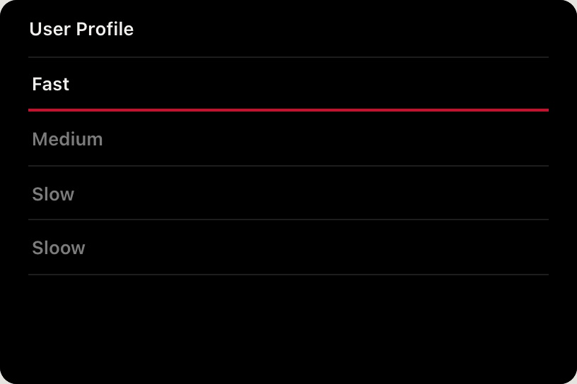

Msetter
Msetter is a free app for setting up a Leica M. Choose what each button does, put your Favorites and screen layouts in order, type your copyright and file names on a real keyboard, and design your user profiles side by side. It saves a settings file for each of your cameras. Everything stays in your browser. Msetter makes no network requests, so I never see anything you open or make. Works on the M11, M11-P, M11 Monochrom and M-EV1.

Why
Typing on a camera is painful. Copyright, file names and profile names are spelled out one letter at a time with the direction pad.
Menus are deep and small. Every setting sits a few levels down a menu built for a three-inch screen. A new camera takes hours to set up.
You keep starting from scratch. After a reset, a repair or a firmware update, on a new body, and on a camera you borrow or rent, your setup is gone unless you remember it. Lend yours out and it may come back changed.
The Leica FOTOS app doesn’t fix it. It changes some settings from your phone, one at a time, with little way to organize your buttons, Favorites or user profiles.
Two cameras drift apart. An M11-P and an M-EV1 have slightly different menus. Keeping them alike means going through every menu on both.
Profiles multiply the work. A change you want everywhere has to be made in every user profile, one at a time.
Buttons
Choose what the top button, FN, the thumbwheel and the M-EV1’s front lever do. In Msetter, click a red button on the drawing and pick its job from the list. The Menu and center buttons keep their jobs; clicking them opens your Favorites and screen layouts.

Defaults and recommendations
- Focus Aid on the top button, next to the shutter release, to magnify with the camera at the eye.
- Pressing the thumbwheel sets the ISO, with the ISO dial on M.
- Turning the thumbwheel sets exposure compensation for those who let the camera choose the shutter speed or ISO. Those who set exposure on the dials have it do nothing, so a bump can’t change it.
- FN left as it comes.
- The M-EV1 lever off, or on Focus Aid and peaking.
- Pros don’t put User Profile on a button. I put it on the top button, and so do the starting sets.
Msetter offers these sets where you set the buttons. Each changes only the buttons, in every user profile.
Focus with the rangefinder and set exposure on the dials. The top button magnifies to check focus, pressing the thumbwheel sets the ISO, and turning it does nothing, so nothing changes by accident.
Shoot on A with Auto ISO and steer it. Turn the thumbwheel for brighter or darker, press it for the maximum ISO, press FN for the slowest shutter speed. The top button opens Drive Mode for the self-timer and bracketing.
Switch user profiles from FN and keep Focus Aid on the top button, where pros keep it. Pressing the thumbwheel opens exposure compensation; turning it does nothing.
Favorites
Press Menu once for the status screen, twice for your Favorites, a third time for the main menu. Favorites holds up to eleven menu items you choose, and five fit on one page. In Msetter, add items from a list and drag them by their number into the order you want. On the camera, items stay in the order you added them; Msetter writes the order you drag. Each user profile can have its own Favorites.


Defaults and recommendations
- Short or empty. The status screen already has ISO, drive, white balance, file format and more.
- What goes in has no button or tile: film style, JPG settings, self-timer, shutter type, perspective control.
- The most-changed item first, and five or fewer, so it fits one page.
Each of these replaces the Favorites in every user profile.
Menu goes from the status screen straight to the main menu. For people who change everything from the status screen and the buttons.
Change the JPG look, the file type and the size without going into the main menu. For shooting DNG and JPG, often black and white to judge the light.
Set the self-timer, the silent shutter, straightening, noise reduction and brackets before a tripod shot.
Screen layouts
While you shoot, the center button steps from the full picture through each layout that has something on; an empty layout is skipped. Leica calls them info profiles. On the M11 bodies they show in Live View and the Visoflex, on the M-EV1 all the time. In Msetter, switch on what each of the four shows (info bars, grid, histogram, horizon, clipping, focus peaking) and drag them into order.

Defaults and recommendations
- Info bars only for everyday shooting.
- Peaking on Low and red, or off and one press away.
- Histogram and clipping in a separate layout, for checking hard light.
- Magnifying from a button, rather than automatically when the focus ring turns.
- On the M-EV1, exposure preview on all the time.
Each of these writes all four layouts in every user profile, with peaking on Low and red. The picture above is Focus and check.
The picture with only the exposure numbers; one press of the center button adds red peaking. For the rangefinder, opening Live View now and then.
A clear view to compose, a focus view with peaking, and an exposure view with histogram and clipping when the light is hard. For the M-EV1 or the Visoflex.
Level the camera with the grid and horizon, check exposure with histogram and clipping and nothing over the edges, then focus with peaking.
Menu settings
White balance, film styles, file names, copyright, power saving and the rest each have a plain name and one line on what it does. Type your copyright and file names on a keyboard instead of one letter at a time.

Defaults and recommendations
- Picture review off, so the finder is free for the next frame.
- Touch off while shooting, so a nose can’t move the focus point. Off (LV mode) keeps touch for menus and pictures.
- Peaking sensitivity Low, for fewer marks that mean more.
User profiles
A user profile is a way of shooting, saved. The camera holds up to six. Each one remembers many settings at once: how slow the shutter may go, how high the ISO may climb, the color and the JPG look, what the buttons do. Switch profile and they all change together, so going from bright sun into a dark room is one press, not ten settings. In Msetter each profile is a column, so you see what changes from one to the next.

Defaults and recommendations
- One for each kind of work or subject.
- Switched from the status screen. I keep four and switch them with the top button, so the next one is a press away.
Msetter comes with starting sets: a few profiles built around one idea. Pick one, then change anything.
Everyday, Day and night, Street, Cinema, One speed and Speed ladder. Switch profile as the light changes.
Motion, Portrait, Landscape, Night, Events, Travel, and Kids and pets. One profile for each situation in it.
Color looks and Black and white. A JPG look in each profile; every picture also saves a DNG.
Factory: the camera as it comes, with one profile.
For example, Travel: Day for walking around, Museum where you must be quiet, Food at the table, Night after dark, and Saver to make the battery last.
How to use it
- Pick your cameras. Msetter makes a separate file for each, so two bodies can share one set of settings even where their menus differ. A value one body doesn’t have becomes the nearest one it does, and the app lists the changes.
- Start from your camera or a starting set. To start from your camera, export its settings to the card (User Profile › Manage Profiles › Export Profiles) and open the file in the app. It lists any value the camera would skip.
- Change what you like. Settings are grouped by what they are for, each with a line on what it does. Undo takes back anything.
- Save and import. Copy
settings.lcseto the top level of the card, then User Profile › Manage Profiles › Import Profiles. With several cameras, Save all downloads one zip with a folder for each camera; put each file on its own camera’s card. Export your own settings first if you want a way back.
The camera doesn’t say when it skips a value, so check a few settings after your first import.